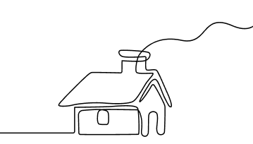
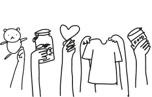
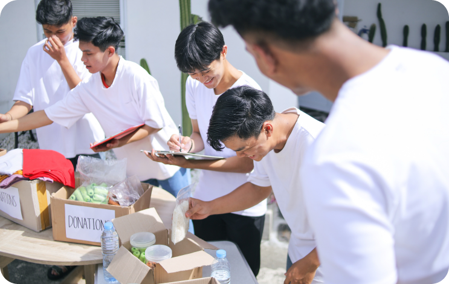
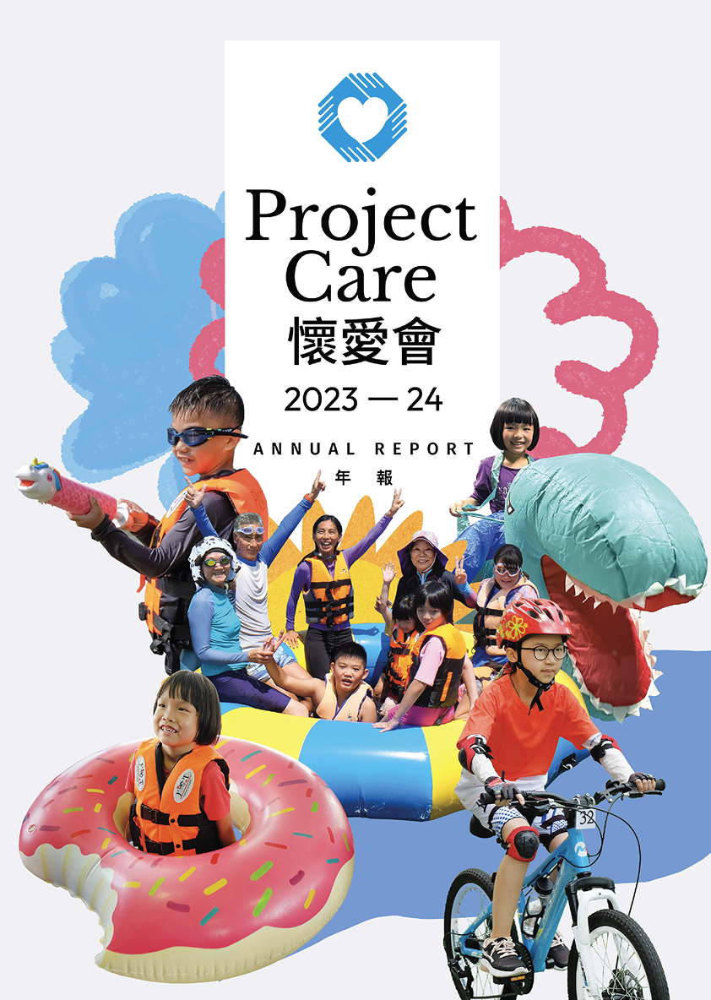

about us
你現在閱讀的並不是真的文案這些文字，只顯示文案將會擺放的位置我們會稱呼案這些文顯示文案會稱呼這些文案為假字。你現在閱讀的並不是真的文案這些文字。你現在閱讀的並不是真的文案這些文字，只顯示文案將會擺放的案這些文顯案為假字。
機構宗旨
- 致力為兒童、青少年及老人提供日間或住宿照顧服務。
- 因應服務對象之需要而提供支援性服務，協助他們融入社會。
- 致力推動義工的參與，並由專業人士協助，令服務更臻完善。
- 致力提倡社區關懷的意識。
- 實踐一切有助達成以上各項目標之行動。
服務發展
本會於一九八一年，由一群熱心公益及有志為社會提供福利務的人士倡議組成，透過開辦老人服務及兒童之家，為社會有需要人士提供適切服務。
沙角兒童之家成立


景林兒童之家成立


你現在閱讀的並不是真的文案這些文字，只顯示文案將會擺放的位置。
你現在閱讀的並不是真的文案這些文字，只顯示文案將會擺放的位置。
你現在閱讀的並不是真的文案這些文字，只顯示文案將會擺放的位置我們會稱呼案這些文顯示文案會稱呼這些文案為假字。你現在閱讀的並不是真的文案這些文字。你現在閱讀的並不是真的文案這些文字，只顯示文案將會擺放的案這些文顯案為假字。你現在閱讀的並不是真的文案這些文字，只顯示文案將會擺放的位置我們會稱呼案這些文顯示文案會稱呼這些文案為假字。你現在閱讀的並不是真的文案這些文字。你現在閱讀的並不是真的文案這些文字，只顯示文案將會擺放的案這些文顯案為假字。
你現在閱讀的並不是真的文案這些文字，只顯示文案將會擺放的位置我們會稱呼案這些文顯示文案會稱呼這些文案為假字。你現在閱讀的並不是真的文案這些文字。你現在閱讀的並不是真的文案這。你現在閱讀的並不是真的文案這些文字，只顯示文案將會擺放的位置我們會稱呼案這些文顯示文案會稱呼這些文案為假字。
你現在閱讀的並不是真的文案這些文字。你現在閱讀的並不是真的文案這些文字。
架構與管理
你現在閱讀的並不是真的文案這些文字，只顯示文案將會擺放的位置我們會稱呼案這些文顯示文案會稱呼這些文案為假字。你現在閱讀的並不是真的文案這些文字你現在閱讀的並不是真的文案這些文字，只顯示文案將將會擺放的位置我們會稱呼案這些文顯示文案會稱呼會擺放的案這些文顯案為假字。
2024-2025 年度執行委員會成員
年度報告
你現在閱讀的並不是真的文案這些文字，只顯示文案將會擺放的位置我們會稱呼案這些文顯示文案會稱呼這些文案為假字。你現在閱讀的並不是真的文案這些文字你現在閱讀的並不是真的文案這些文字，只顯示文案將將會擺放的位置我們會稱呼案這。
